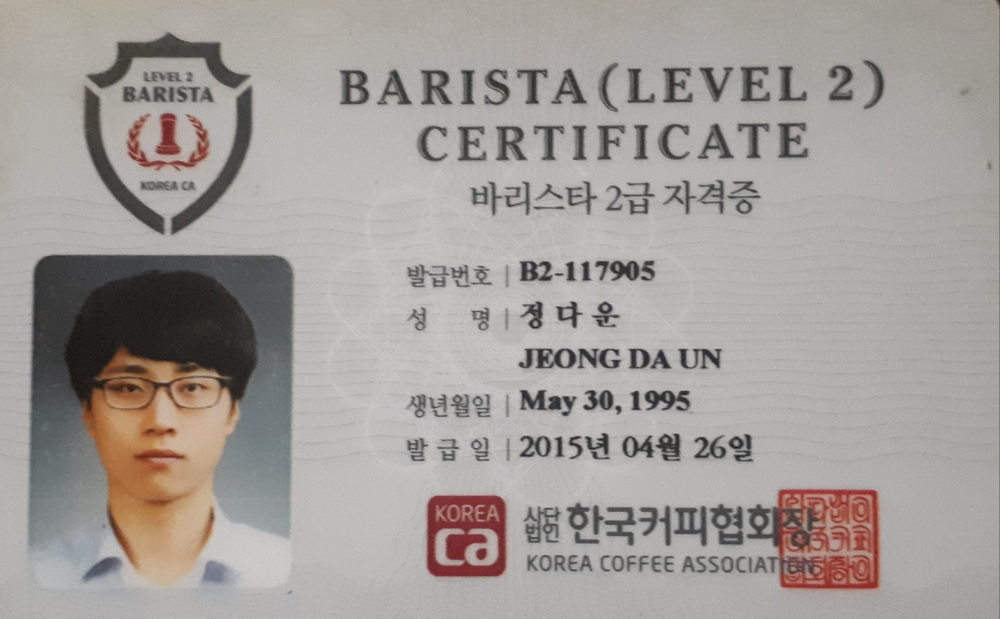
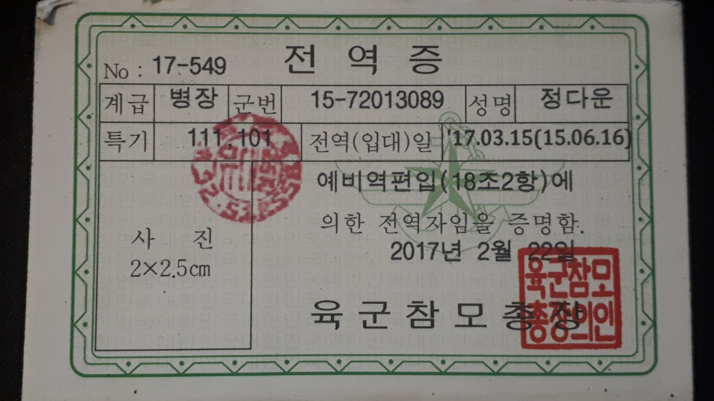

▲ 위에서 이력서 종류를 선택해주세요.
인적 사항
| 국문 이름(한문) | 정 다운 ( 鄭 多 云 ) |
| 영문 이름 | Jeong Da Un |
| 나이(만 나이)(js) | 24세 (만 23세) |
| 주민등록번호 | 950530-1****** |
| 연락처(js) | 010 - 7399 - 7695 |
| 이메일 | wer05973@naver.com |
| 주소(js) | 대구광역시 달성군 다사읍 서재로 30길 6-5, B/202 |
학적 사항
| 입학년월 | 학적사항 | 졸업년월 |
|---|---|---|
| 2011 . 03 | 호산고등학교 | 2014 . 02 |
| 2014 . 03 | 영남 대학교 생명공학부 | 2017 . 08(중퇴) |
경력
| 근무기간 | 직장명 | 주요업무 |
|---|---|---|
| 2013 12월 ~ 2014년 10월(11개월) | 마사커피 계대동문점외 3곳 | 음료제조, 매장관리, 매장 총괄 매니저 |
| 마사커피 계대정문점 | ||
| 마사커피 서문시장점 | ||
| 마사커피 대구공항점 | ||
| 2014년 12월 ~ 2015년 04월(5개월) | 아드리아나 커피 서재점 | 음료제조, 매장관리 |
| 2017년 03월 ~ 2017년 08월(6개월) | 파스쿠찌 이곡점 | 음료제조, 매장관리 |
| 2017년 04월 ~ 2018년 12월(9개월) | 아드리아나 커피 서재점 | 음료제조, 음식조리, 매장관리, 점장대리업무 |
자격증 자료(js)
바리스타 2급 자격증 2015.04.26
병역 사항
50사단 121연대 2대대 화기소대 현역 병장 전역
Menu 1
Ut enim ad minim veniam, quis nostrud exercitation ullamco laboris nisi ut aliquip ex ea commodo consequat.
인적 사항
| 국문 이름(한문) | 정 다운 ( 鄭 多 云 ) |
| 영문 이름 | Jeong Da Un |
| 나이(만 나이)(js) | 24세 (만 23세) |
| 주민등록번호 | 950530-1****** |
| 연락처(js) | 010 - 7399 - 7695 |
| 이메일 | wer05973@naver.com |
| 주소(js) | 대구광역시 달성군 다사읍 서재로 30길 6-5, B/202 |
학적 사항
| 입학년월 | 학적사항 | 졸업년월 |
|---|---|---|
| 2011 . 03 | 호산고등학교 | 2014 . 02 |
| 2014 . 03 | 영남 대학교 생명공학부 | 2017 . 08(중퇴) |
경력 사항
| 근무기간 | 직장명 | 주요업무 |
|---|---|---|
| 2013 12월 ~ 2014년 10월(11개월) | 마사커피 계대동문점 | 음료제조, 매장관리, 매장 총괄 매니저 |
| 2017년 04월 ~ 2018년 12월(9개월) | 아드리아나 커피 서재점 | 음료제조, 음식조리, 매장관리, 점장대리업무 |
| 2018.06 ~ (현재 진행 중) | ETCH | 아이디어 회의 주재, 아이디어 사업화, 웹개발/디자인회의 |
카페 매니저 - 여러 동아리의 회장자리를 맡아보았고, 제 인생에서 빠질 수 없는 커피, 즉 카페매니저와 점장을 역임하면서 여러 사람의 고충과 이야기를 들어주는 법을 배웠습니다. 또, 그들이 잘 못 알고 있는 조직내 규율이나 구조 등을 올바르게 이해할 수 있도록 지적하며, 설득하는 일도 많이 해보았습니다.
etch대표 - etch라는 팀은 사업을 위한 프로젝트그룹이며, 현재도 열심히 활동 중입니다. 많은 아이디어가 나왔고, 여러 사항을 검토하여 실행에 옮기고 있습니다. 물론 사업을 진행함에서 여러 풍파를 맞아 현재까지 진행이 잘 되진 않았지만, 그 또한 경험이라 생각하며 사업을 위한 아이디어 회의, 웹 개발, 웹 교육, 마케팅 등을 진행하고 있습니다.
자격증 자료(js)
자격증 yyyy.mm.dd

자기소개서
어릴 적, 집에 있는 가전기기가 고장 났다 하면 버리지 못하고 제 방에 뒀었습니다. 그 안에 있는 배선들 부품들 흥미로운 것들뿐이었으니까요. 그중에서도 컴퓨터가 참 마음에 들었는데, 고장 난 물건 중에서 가장 깔끔하게
해체할 수 있고 저 혼자서도 알 수 있을 정도로 정보가 많았기 때문입니다. 그렇게 하드웨어에 관심을 두고 있던 차에 친구들이 배우는 소프트웨어분야에도 관심이 생기더군요. 하드웨어는 육체이고
소프트웨어가 뇌라는 생각이 들었습니다. 대학에서도 주로 뇌 분야에 관심이 많았었는데, 그와 같은 역할을 하고 제가 까보기도 쉬운 컴퓨터 관련 분야를 늘 맘에 품고 있었습니다. 그리고 제가
자진 퇴학을 결심한 그 해, 컴퓨터에 대해 깊게 배울 기회를 찾아내었고, 한 치의 망설임 없이 뛰어들었습니다.
의무교육이라는 틀에 갇혀 시험을 바라보고 사는 친구들을 보니 너무나도 서글펐습니다. 학교 내에서도 즐길 거리가 많다는 것을 알려주고 싶었습니다. 다른 몇몇 선생님분들은 교무실에 자주 찾아와 선생님들과 놀기만 하는 제가
거슬렸을 테고, 또 대학교수들이 저를 바라보는 인식 또한 그리 좋지 못했을 겁니다. 하지만 학우들 사이에서의 저에 대한 평가는 달랐습니다. 고교생 시절, 학년이 올라가면서부터 저는 친구들이
약한 탐구과목을 직접 지도했고, 그들의 꿈을 지지했으며, 제가 직접 동아리를 만들어 그들의 학업/ 취업 스트레스에 대한 상담도 자처하여 같은 동급생이나 후배 학우들 사이에서 평판이 좋았습니다.
결국, 저를 안 좋게 보시던 선생님분들이나 교수님마저도 저의 이 활동적이고 자유분방한 모습을 자연스레 받아들였습니다. 또한, 여러 제한적인 사항에서 제가 고교 시절 만든 동아리는 나날이 발전하여
교장 선생님의 눈에 들었고 동아리원 전체가 상장을 받기도 하였습니다. 그때 당시 같이 동아리를 운영했던 친구들은 물론이고 저도 결국엔 지망하던 학과에 입학하여 만족스러운 대학생활을 하였고,
제가 졸업한 후에도 몇 년간 그 동아리는 꾸준히 활동한 것으로 알고 있습니다. 대학 시절 또한 여러 동아리 활동으로 검도부, 축구부 등 사교성과 활동성을 꾸준히 키웠고, 다양한 사람들을 만남
때문에 포용과 인내 등을 배웠습니다. 전공 성적은 그다지 좋지 못하였지만, 그에 반해 교양과목에서 우수한 면모를 발휘했고, 그 덕분에 남들보다 폭넓은 지식과 상식을 얻을 수 있었습니다. 저는
비록 대학중퇴라는 허점을 가지고 있지만, 중퇴 후 배운 모든 것이 대학 전공과목에서 배울 지식보다 못하다고는 생각하지 않습니다.
제 성격의 장.단점을 알기가 쉽지 않습니다. 여러 사람에게 물어보기도 했지만, 보는 사람에 따라 또, 제 기분에 따라 장단점이 바뀌며, 심지어는 장점이 단점이 되는 때도 있고 그 반대인 경우도 있습니다. 단지, 제 성격을
어딘가에 비유하자면, 액체 같습니다. 성격뿐만 아니라 제 행동, 사고들 모두 액체와 같은 성질을 가집니다. 다른 사람들도 마찬가지겠지만, 여러 성격이나 가치관들이 섞여 ＇나＇라는 사람을 특정합니다.
그래서 저의 성격은 제가 어디에 존재하는지에 따라 다양하게 바뀝니다. 예를 들어, 물이 어딘가로 흘러들어 가면 다시 복원시키기는 거의 불가능에 가깝습니다. 저 또한 일련의 사건, 혹은 하나의
생각이나 일에 들어가면 그 자체가 되어버립니다. 제가 정한 틀로 다시 퍼담아도 이미 변형된 성질을 조금이나마 가지고 있습니다. 하지만 평생 그 상태로 살아가는 것 또한 아닙니다. 자연적으로
불순물이 가라앉든 필터로 정수과정을 거치든 다른 액체와 또다시 섞여 흐르든 또 다르게 변화할 수 있는 것이 액체입니다.
어떤 일이든 시작은 천천히 하려고 합니다. 계단을 밟아 높은 곳에 올라가듯이 한 단계 한 단계 밟아가는 것은 물론이거니와, 부서질까 두려운 부실한 곳은 다시 만들어 가며 저 자신을 갈고닦으려 합니다. 제가 꿈꾸는 미래를
위해 현재는 남들이 만들어 놓은 계단을 밟아 올라가지만, 그 옆에 착실히 저의 계단을 쌓고, 저 자신과 더 넓은 세상을 둘러보려 합니다. 제 목표는 한계가 없는 만능이 되는 것입니다. 또한,
저같이 사회라는 물살에서 벗어나 자신의 진가를 드러내지 못하고 속으로만 끙끙 앓는 많은 이들에게 기회를 쥐어 줄 수 있는 사람이 되고 싶습니다.